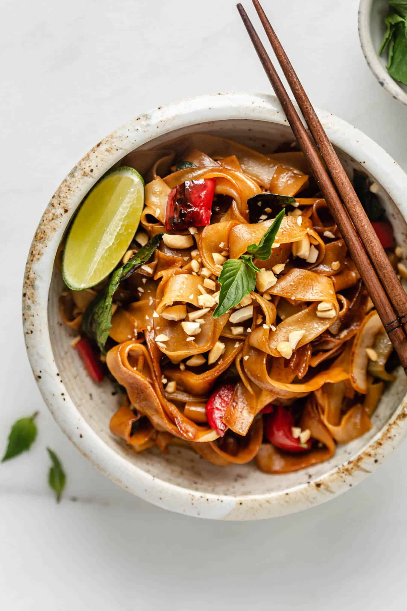

Drunken Noodles

Description
Drunken Noodles is a Thai dish that's a favorite everywhere. It tastes sweet yet savory,
and I'll never deny getting a hot plate of them.
Ingredients (serves 2 or 3)
- green onion
- onion
- chili
- garlic
- sugar
- oyster sauce
- light soy sauce
- dark soy sauce
- fish sauce
- chicken or beef
- wide dried rice noodles
- thai basil/thai holy basil
Steps
As with all stir fries and stir fried noodles,
this moves fast once you start cooking – around
6 minutes start to finish – so have everything ready
to go before you start cooking!
- Combine all sauces and sugar
- Stir fry vegetables first with sauce, and then fry the chicken
- Cook the noodles and add to the pan
- Mix the noodles and add the thai basil. Serve and enjoy!